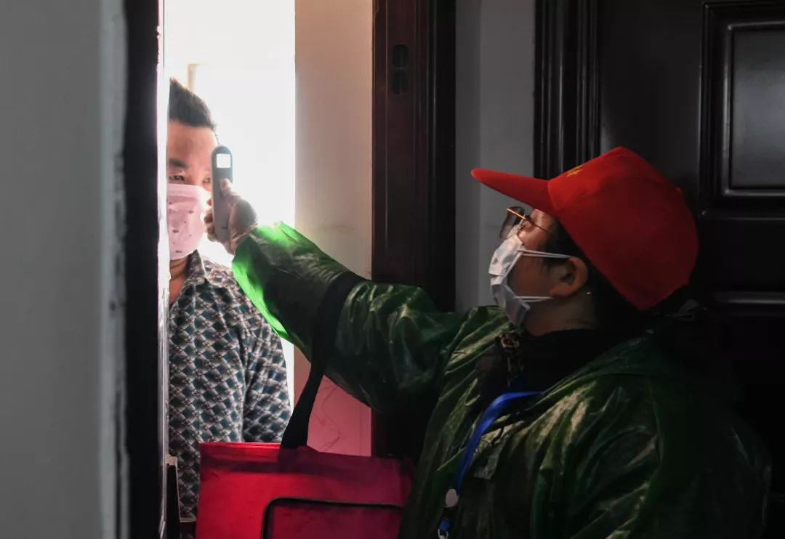
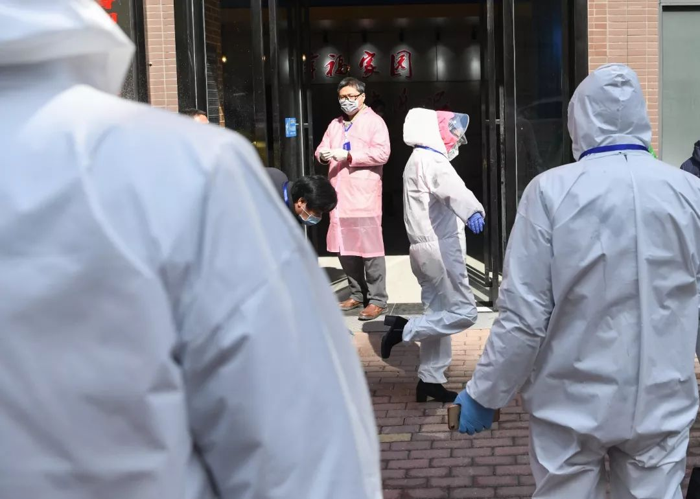

武汉会战：一场史无前例的超级行动
原文链接 备份链接 伴随着火神山、雷神山医院开始收治病人，15家方舱医院陆续启动， 各省医疗队开赴武汉，武汉所有确诊患者与疑似病例都将“应收尽收”。 在人类抗击疫病的历史上，“武汉会战”已成为一场史无前例的超级行动 图/新华、中新 武汉 …


*************▲*************2月18日，青山区工人村街道青和居社区第三网格网格员在挨家排查。 （新华社/图）
全文共8426字，阅读大约需要16分钟。
新建或改造医院的速度，远比不上确诊病例每天一千多的增速，若不切断传播源头，降低死亡率并不现实。“武汉是决战之地，要集中力量打歼灭战，而不是松松垮垮打持久战。”
从除夕夜到2月17日，短短25天，208支医疗队、25972名队员驰援江城。12座方舱医院陆续启动，提供床位20461张；45家定点医院，开放19161张床位；16所省属高校被征用为储备隔离点，1.5万间隔离房间待用。
来自福建中医药大学附属人民医院的护士长陈水凤，目前正在支援武汉市金银潭医院。病人对她说的一句话，被她记在了日记本里：“武大的樱花马上就要开了，等我们好了，一起去看樱花。”
本文由南方周末独家授权腾讯平台，任何第三方未经授权不得转载
文 | 南方周末特派记者 马肃平
责任编辑 | 曹海东
农历鼠年刚过，张绪一家就步入了“计划经济”年代。
五口之家，每天四菜一汤，“计划着吃”。猪肉太贵，储备肉口感没那么新鲜，全家只能吃了很长一段时间腊肉、腊鱼，“都是年前准备的”。
腊月二十九，武汉“封城”。家住江岸区百步亭花园社区安居苑的张绪，就体会到了生活之艰辛：因为私家车没在交管局备案，无法上路，出门采购等日常生活大受影响。
2月11日凌晨，武汉疫情防控再度升级：全市住宅小区启动封闭管理，最大限度减少人员流动。每户家庭凭出入证，每三天可指派一人出门采购生活物资。
张绪一家不得不再度关心粮食和蔬菜。中百仓储百步亭店的绿叶菜刚到货，月基本工资只拿1500元的张绪一口气买了近三百元的蔬菜、肉类和大米。想买面粉却一直没找到，一问才知道面粉现在特别俏，上午10点超市开门没多久就卖完了。
一纸纸百字通告的背后，背负的是一座城市逾千万人口的日常生活。
对于四十岁的张绪来说，早在2月6日上午就从新华社的报道中嗅到了不一样的“味道”。“战时状态决不能当逃兵，否则就会被永远钉在历史的耻辱柱上。”国务院副总理孙春兰的战时讲话，通过各类新闻推送到了上千万市民手中。
“战时状态”，凸显疫情严峻。2月2日开始，武汉新增新冠肺炎确诊病例数每日破千，三道疫情防线紧急建立：社区及发热门诊组成第一道防线，从基层全面排查发热病人；方舱医院组成第二道防线，主攻轻症患者；定点医院与火神山、雷神山医院组成第三道防线，抢救重症、危重症患者。
从1月24日除夕夜到2月17日，短短25天，208支医疗队、25972名队员驰援江城。12座方舱医院陆续启动，提供床位20461张；45家定点医院，开放19161张床位；16所省属高校被征用为储备隔离点，1.5万间隔离房间待用。这是一个国家的疫情应急响应。
巨量医疗资源的投入、分级诊疗体系的重建，“医疗挤兑”矛盾初步得到解决，但控制疫情蔓延最核心的一点，感染者底数并没有完全摸清。
基于此，中国工程院院士钟南山直言，“武汉到现在还没有完全阻断人传人”。2月12日，中央指导组副组长、中央政法委秘书长陈一新要求，当前要实行“三量管控”：控增量、减存量、防变量。
“封城”第24日，武汉开展了为期3天的集中拉网式大排查。2月16日，刚刚履新4天的湖北省委常委、武汉市委书记王忠林在视频会上要求，“不漏一户、不漏一人”。他说，“只有找到人、查到人，才能落实‘应收尽收’”。
“武汉是决战之地，要集中力量打歼灭战，而不是松松垮垮打持久战。”王忠林向武汉全市干部做了“战前动员”。
1
准确地说，武汉“大决战”是从2月5日开始的。
这一天，武汉市新冠肺炎疫情防控指挥部下了“死命令”：最晚至2月7日前摸排出所有疑似病例；争取在2月5日晚24时前，收治所有确诊病人。
当时的武汉，疫情正处于暴发流行期，在以色彩深浅表示感染程度的全国疫情分布图上，武汉的颜色深到发黑。无法得到及时救助的很多人迫不得已通过社交平台求助，将精确到门牌号的家庭住址、身份证号等全部隐私，暴露在亿万网民面前——这是一条标准的求助帖格式。
77岁的退休教师刘立，几经摸索终于在凌晨一点多开通了微博账号，仅仅为孙女求一个救命的机会。女儿还未等到确诊就已离世，年过七旬的老两口和13岁的孙女都已经感染。他的微博主页第一条只有两个字，“你好”。
非常时期的武汉，核酸检测名额虽有增多，但改造和新建医院的速度远赶不上每日破千的新增确诊人数，依然有很多人不能住院。
从1月27日大年初三到2月14日，二十天不到，湖北电影制片厂员工常凯一家四口全部去世。遗书中，常凯写父亲发病之时，“送至多家医院救治，均告无床位接收，多方求助，也还是一床难求，失望至极，回家自救”。床前尽孝寥寥数日，病毒也吞噬了他和姐姐的躯体。
彼时的武汉，集中收治重症患者的金银潭、肺科、中南这三家定点医院，仅有重症床位110张。火神山和雷神山医院的重症监护床位也仅有30张。因为一床难求，有救护车送一个病人辗转六家医院都没被接收，最后只好将其送回家。
2月8日，母亲快撑不下去的那一天，身着睡衣的汉阳女子李丽娜在阳台敲锣求助。曾在医疗系统工作过的李丽娜，认识不少医生朋友，但打遍手里所有熟人的电话，还是被告知床位太紧张。社区的反馈也一样，“已经登记上报街道了，正在排队”。
实际执行中，武汉市新冠肺炎疫情防控指挥部2月5日的这道“死命令”并未达到预期。2月8日，时任湖北省委书记蒋超良在武汉市督导疫情防控工作中，再次指出要在两天之内将全市累积的所有疑似患者检测完毕。
一天后，武汉启动“应收尽收”大排查。事实上，早在1月24日，湖北省、武汉市主要领导出席的会议中即提到“确保无条件收治所有疑似患者”。次日，武汉市指挥部会议明确提出“即刻为各区尚未收治患者落实床位，分清轻重缓急，确保‘应收尽收’” 。
从2月9日开始，3.4万名公务员、国企员工下沉到武汉三镇的1107个社区内，全天候全覆盖排查“四类人员”（确诊、疑似、发热和密切接触者），确保每个确诊、疑似、发热和密切接触者都能被安置到当时的31家定点医院、3家方舱医院和百余个由酒店、学校等场所改建成的集中隔离观察点。
如果能顺利完成这一步，武汉市内最危险的传染源就能被彻底切断。
2
接到街道“清零”要求的催促电话，是2月9日上午。武汉市江汉区某社区主任张娟所要面对的，是五千多户、近两万居民。
该社区至今共有超过20人确诊感染新冠肺炎。虽想通过网络尽力实现“无接触排查”，但很多爹爹婆婆使用老年机，不会上网，电话也打不通，不得不上门排查。“我们规定，敲门后要退到1.5米外，不然人家害怕你有病毒。”张娟说。
张娟的办公桌位于社区服务站的最深处，桌上堆满了各种登记表，记录着社区工作人员从1月底至今的工作成果。对于社区而言，真正的“战时状态”始于2月9日，工作人员为居民登记的表格，标题改成了“战时状态接访记录表”。
这一天，张娟和4名工作人员早晨9点不到就坐在社区服务站，一遍遍拨打电话，要求居民上报体温和健康状况，撂下电话后，在记录本的最后一行画个钩，完成一户排查。一天下来，每人至少打了150个电话，“手机发烫”。庆幸的是，当天没有接到一个新增发热报告。对于从年前忙碌至今的张娟来说，这无疑是莫大的安慰。
2月9日下午，张娟接到领导电话，要求当天必须把还没有完成两次核酸检测的疑似人员都摸排完。此前，核酸检测要等三天才能出结果，现在明显提速，送检后第二天就能出结果。晚上8点-9点，她接听和拨打了近二十个电话。有人咨询问题，有人求助床位，还有人哭诉觉得自己染病了，寻求心理安慰。
在居民眼中，社区俨然是万能救命稻草，一旦达不到要求，投诉扑面而来。报疫情、困难户上门、填表、联系分配给社区的司机接送病人……社区共有十来个工作人员，年前就有人不堪压力辞职了。

社区排查人员进行个人消毒。 （新华社/图）
张娟和同事们有太多“想要崩溃的瞬间”。一位八十多岁的老人发烧，儿子一来就要求解决问题，“我们告诉他床位要等，他开口就骂我书记怎么当的，你说这是一个社区能拍板决定的吗？”
2月11日武汉实行小区封控令后，社区担子又重不少。社区工作人员、下沉的党员干部、小区保安轮番排班上岗，每天手持体温枪，问无数遍哲学问题：你是谁？从哪里来？要到哪里去？
洪山区华大家园被称为“最牛小区”，1766户仅一人感染。小区一旦有人出问题，可以查到他所有出入信息。因疫情期间小区封闭，武汉蔡甸街一传销团伙食物耗尽自首，只有向社区求助。
百步亭花园社区的百步雅庭小区门口，有个小姑娘搬不动快递箱，保安想上去帮把手，被拒绝了。保安大叔想想没怪她，毕竟非常时期。
看似坚强，恐惧同样缠绕着江城居民。殡仪车抬着逝者从身旁经过的那一刻，张娟下意识地辨别了一下风向，生怕病毒随风吹来附在自己身上。
3
抗“疫”之战，关键在于摸清底数，分流“四类人员”。
2月9日发起的“应收尽收”大排查，官方后来称“户数排查的百分比达到98.6%，人数排查的百分比达到了99%”，但这项工作并没有实现如期效果。
湖北省委常委、武汉市委书记王忠林在新冠肺炎疫情防控指挥部的视频调度会上就认为，之前的这场大排查“大而化之的比较多”“在执行排查上态度不坚决、措施不严密、网眼太大”。
2月9日晚，在将确诊还未住院的新冠肺炎重症患者转运至武汉同济医院中法新城院区的过程中，武昌区由于工作滞后、衔接无序、组织混乱，不仅转运车辆条件差，街道和社区工作人员也没有跟车服务，导致重症病人长时间等待，继而情绪失控。
通过媒体曝光这种强势途径，问题获得了超常的解决速度和处理力度。
“负责转运危重症病人的党员干部为什么不跟车？现在的武汉就是战时状态，这些人的行为十分恶劣。”2月10日，中央赴湖北指导组紧急约谈武汉市副市长等3人，要求向患者挨个赔礼道歉，对相关责任人严肃问责。
当时，仅武汉一地，新冠肺炎的死亡病例数已接近2003年SARS造成的全球死亡人数。《人民日报》评论，约谈是在释放强烈的信号：战“疫”当前，失职失责者，必将受到严肃问责。
2月8日，中央向湖北空降两员大将——中央政法委委员、秘书长陈一新任中央指导组副组长，国家卫健委副主任王贺胜任湖北省委委员、常委。同一天，湖北省卫健委党组书记和主任双双被免职，由王贺胜兼任两职。
两天后，习近平总书记戴着口罩，主动伸手腕测体温，在北京调研新冠肺炎疫情防控工作，他对社区居民说“非常时期，就不握手了”。调研完社区，习近平在地坛医院远程诊疗中心视频连线了金银潭医院、武汉协和医院和火神山医院，向武汉“喊话”，“武汉胜则湖北胜，湖北胜则全国胜”。
2月13日，战“疫”正酣之际，湖北省委再有人事调整。上海市长应勇接替金融系统出身的蒋超良，出任湖北省委书记；山东省委常委、济南市委书记王忠林接替企业出身的马国强，出任湖北省委常委、武汉市委书记。这次火线换帅，让很多人想到SARS期间扭转战局的北京临时换帅。
忙着社区排查、填表统计的张娟，无暇顾及地方官员“下课”，更没时间看新闻联播，但她能感受到层层传导的压力：每天早、中、晚，她都会接到街道的电话，对方不停催问确诊病例安排到了哪一步。
压力在最近三天全市拉网清底大排查中达到顶峰：武汉市委书记王忠林在市新冠肺炎疫情防控指挥部召开的视频例会上如此督战：再发现一例居家确诊或疑似病人，“拿区委书记、区长是问”。
“领导给社区下的死命令是优先保证确诊病人100%收治，一旦督导组发现有人没收进去，就会问责。”张娟分析，这是新来的书记发力了。
4
武汉的“三道防线”中，方舱医院将轻症患者与外界隔离，防止病毒传染传播给其他人，起到“缓增量”的作用。尽管硬件条件比不上定点医院，但已是轻症患者的最好选择。
武汉并非方舱医院的首次亮相，汶川和玉树地震中就曾出现过它们的身影。建方舱医院也不是武汉提出的，而是由专家提议并由中央下令推动的。
2月1日，中国工程院副院长、呼吸与危重症医学专家王辰到达武汉。大批患者在社会上流动、在家中居住隔离，容易交叉感染，这样的场景，让在SARS时期曾担任北京医疗专家组组长的王辰觉得不妙，于是提出了建方舱医院的想法。
国家应急医疗队（广东队）刚到武汉的2月4日，48小时内建起的江汉方舱医院，还处于不断梳理流程的状态。近两千张床位由不同省份的医疗队接管，为了更了解患者病情，由广东省第二人民医院抽调的这支队伍向指挥部提议，每支医疗队每天固定区域值守。
“速成”的方舱医院，医护和服务设施难免跟不上。2月上旬的武汉，凌晨一点的温度常常只有3度，由会展中心改造的方舱医院内没有暖气，有老人吃不好睡不好，在医护人员面前耍起了小脾气。
2月7日深夜，汉口人胡明洪冒雨在洪山体育馆外的露天场地等了4个小时，终于办完交接手续住进了武昌方舱医院。好在那时，一切正逐渐步入正轨——每位患者都配上了电热毯，元宵节那天，他还吃到了萝卜烧肉和基围虾。
气温陡降的2月15日，上任刚3天的湖北省委书记应勇来到武汉客厅方舱医院，第一个关注的问题就是“现在舱内温度多少？”
在方舱医院，一名医生要负责约50个病人。治疗大同小异，医生给胡明洪开了盐酸阿比多尔、磷酸奥司他韦、莲花清瘟胶囊和袋装的中药肺炎1号方“寒湿郁肺汤”。护士会提醒他吃药，但病人太多忙不过来，病友间就需要互相提醒。
湖北省肿瘤医院医疗队副队长王俊，是最早进驻武昌方舱医院的医生之一。他和团队摸索出了一套“患者自治”的管理模式——将患者分区、选出区长，由患者自主维持秩序。A区的区长把病中心得写成长文，在微信群里分享；B区的区长发现晚上睡觉时体育馆的灯没法关，于是联系朋友送来了两百多个眼罩。
方舱医院内的床位也正在加速周转。2月11日，首批28名患者从武昌方舱医院治愈出院，此后累计有超过250名轻症患者从四家方舱医院康复出院，新的轻症患者被转运至此。与此同时，还有8家方舱医院陆续启用，预计可收治超过2万名患者。
患病之际，人们常常被一些寻常的事物所打动。一位戴着口罩的“读书哥”半躺看书的照片上了微博热搜，连作者弗朗西斯·福山都在推特上转发了这条新闻。
新疆维吾尔自治区人民医院医生巴哈尔身着防护服，和病患们跳起了“黑走马”舞。来自山东齐鲁医院的医护人员在48小时内编写出了武汉方言实用手册——“滋一哈：擦拭一下”“你蛮灵醒：你很漂亮”，减少和老年人的交流障碍。有医护人员在防护服上写上了“周黑鸭”“热干面”，他们解释说“其实很简单，就是想吃了”。
5
在医疗资源捉襟见肘的武汉，定点医院重在拯救危症，承担“减存量”的作用。
在这座现代大都市拥有一张床位，意味着有了专业的医护人员和医疗设备支持。但最紧张的一天，全市定点医院仅剩空床123张。“宁可让床等人，也不要让人等床。”2月11日在方舱医院考察时孙春兰说，要加快增设床位并提高收治能力。
一切与病魔生死竞速。建设高峰期，雷神山医院的7435名施工人员、1491台挖机吊车昼夜不停地施工。1月24日、2月2日、2月13日、2月17日，人民空军先后四次驰援武汉，出动空军运输机30架次，紧急运送军队支援湖北医疗队和物资。2月9日这天，超过40架包机把近六千名医护人员送到了武汉天河机场。北协和、南湘雅、东齐鲁、西华西，医疗界四大“天团”会师武汉。
北京医院、北京协和医院、中日医院等6家在京委属委管医院也投入了战斗。就连一些宁夏固原、西宁湟源等四五线小城，也抽调精兵强将驰援武汉。
比起一般床位，更紧缺的是重症病房和配套资源。同济医院中法院区、光谷院区，协和医院西院，湖北省人民医院东院……在汉的委属委管医院和省属大医院被紧急改建成集中收治重症病例的定点医院，床位一下子扩大到了五千张。
全国医疗界的“顶配”资源倾巢出动，整建制地接管这些医院或病区。2月1日，广州医科大学附属第一医院副院长张挪富带领团队接管了协和西院重症监护室（ICU），全院八百个病人中至少有10%属于危重症，急需插管，而ICU病区只有20张床。国家卫健委主任马晓伟和医政医管局副局长焦雅辉也急了，问有什么办法可以降低病死率。
“在普通病房开展有创插管，只有这个办法。”张挪富回答。来到武汉后，张挪富既是个专家，又当起了管家，每天不光负责临床工作，还要管后勤，甚至动用私人关系四处借设备。
国家卫健委领导当场拍板，想尽一切办法调配设备。全国两千多名ICU护士先后被调配到了武汉，国家卫健委还要求驰援的医疗队必须自带呼吸机、监护仪、ECMO等配套的生命支持设备。
带着患者闯关的医护人员，自身也在闯关。厚重的防护服一穿就是6个小时，这意味着不能喝水不能上厕所，第一次经历“三级防护”的90后护士循环着头晕、胸闷、干呕的状态，只能蹲在地上暂作缓解。有医生发现，鼻梁低也是件好事，至少N95口罩一直戴着不会把鼻梁压出疮。
2月10日晚间的新闻发布会上，时任武汉市委书记马国强介绍，经过两天努力，开拓病床，之前未住院的1499名重症患者已经全部入院。
并不是所有的战“疫”故事都拥有美好的结局。滴滴快车司机林方曾接到过武汉市中心医院的一名护士，当晚，她护理的重症病人没能抢救过来。林方问她怕不怕，她说当然怕。两人随后沉默了，不知该说些什么。
6
2月12日，武汉市538例患者治愈出院，全市新增确诊病例连续两天下降。
这一天，上海援鄂医疗队队长郑军华开始了在金银潭医院第20天的工作。作为最早到达武汉的医疗队，度过了最初的适应和磨合，他的心情早已平静，只盼望武汉的疫情拐点能早日出现，“对于医疗队，这意味着希望和信心”。
不过2月13日，湖北省卫健委一反常态，推迟了每天7时前后发布的疫情动态。8时30分，“武汉发布”官微推送了最新的疫情数据，张娟停下手头的工作，愣了愣神——武汉全市新增确诊病例13436例（含临床诊断病例），比过去每天提高了近10倍。
其实一天前的2月12日，在武汉市疫情防控指挥部的会议上，陈一新就点出了武汉疫情的严峻形势——依然处于暴发流行期，新发病例仍处于高位，感染者底数还没有完全摸清，蔓延扩散也没有较为精准的估计预测。
好消息是，统计口径的变化，让那些延误多日、符合CT表现等临床诊断的患者，终于可以确诊入院。13日开始，武汉地区的新增确诊病例大幅回落，但依旧是全国疫情最严重的城市。
2月17日，钟南山院士团队与武汉前方的广东医疗队ICU治疗团队开展远程视频会诊时，钟南山指出，新建或改造医院的速度，远比不上确诊病例每天一千多的增速，若不切断传播源头，降低死亡率并不现实。
武汉的确诊病例中，重症占比18%。接管ICU病房至今，张挪富团队共接收了36位极危重症患者，接近50%的死亡率，时常让这位钟南山团队在汉的负责人感到无力。
国家卫健委医政医管局副局长焦雅辉透露，武汉市重症病例从发病到住院平均9.84天。10天的等待过程中，轻症恶化成了重症，导致武汉的危重症患者病情比其他地区更重，救治难度比SARS时期更大。病情一拖再拖，等到了终末期才转至ICU，医生往往无力回天。
“收到的病人太滞后了。”中南医院重症医学科ICU有16张床位，病人大多从其他医院转诊至此，有些还曾经历过心脏骤停。对于新冠肺炎，全世界都没有特效的治疗方法，中南大学重症医学科主任彭志勇和团队只能尽力保证病人不因缺氧而死亡。
7
在投入了巨大的人力和物力后，武汉仍然没有彻底查清感染底数，仍然有病患到不了隔离点，得不到医疗救护。这场大决战，似乎还没有鸣锣收兵的迹象。
2月16日，武汉市启动为期3天的集中拉网式大排查，摸清底数。这一天，武汉市连发四道金令，全面升级防控标准。王忠林特别强调要落实5个“百分之百”：确诊患者百分之百应收尽收，疑似患者百分之百核酸检测，发热病人百分之百进行检测，密切接触者百分之百隔离，小区百分之百实行24小时封闭管理。
这一天，武汉市疫情防控指挥部新设立了床位保障组、疾病控制组、党建考核组、援汉医疗队接待协调组。相比之前指挥部的设置，这些小组无不是针对当前防疫工作的重点、难点、短板、弱项。
16日晚接到大排查的通知后，洪山区张家湾街万科金色城市就开始了准备工作。社区副书记徐秋思走进居民楼，打开电表箱，对照手上的入住登记表，核查是否有“漏网之鱼”。还有网格员挨家挨户地数楼栋住户亮灯情况，对比前期排查数据。
14位干部获得火线提拔。陈一新说，要在火线中选拔战将、猛将，真正把“官帽”用于激励更多党员干部在战疫中冲锋陷阵、拼搏奉献。
决战的气氛仍在延续。协和医院将肿瘤中心院区紧急改造成了新冠肺炎危重症患者救治定点院区，加开了850张病床。医生们仍源源不断地向武汉集结，一些医院的呼吸、感染和ICU三大科室的医护人员，几乎已被抽空。
为了防止有人发烧不上报私下吃药，湖北省全面排查通过实体药店或网上订购降热退烧止咳类药品的人员，就连便利店门口也配备了体温检测员。
中百仓储水果湖店卷帘门紧闭，从2月18日起，武昌区的所有超市只接收社区团购客户，不再对个人销售生活物资，如有违反，按照“战时状态”的相关要求，依法依规严处；汉阳区则规定，凡入超市购物者，需持有汉阳区新冠肺炎防控指挥部办公室统一印制的《居民通行证》。
2月17日，湖北神农架林区无新增病例，确诊病例全部治愈，已经实现“清零”，这给疫情防控处于“最吃劲的关键阶段”的武汉带来信心，正如陈一新所说：“想要疫情出‘拐点’，先要信心出‘拐点’”。
武汉“大决战”，只有武汉自己知道伤口有多大，他们来自于楼下的救护车或殡葬车，身边亲友的求助。漩涡之外的人们只能看到一个数字，看不到背后的悲欢离合。
疮痍之下，留存着希望。如同被按下了暂停键，漩涡中心的武汉异常冷清。只有到了夜晚，灯光秀墙体字母闪烁着“武汉加油”。
来自福建中医药大学附属人民医院的护士长陈水凤，目前正在支援武汉市金银潭医院。病人对她说的一句话，被她记在了日记本里：“武大的樱花马上就要开了，等我们好了，一起去看樱花。”
（应受访者要求，文中张绪、张娟、林方为化名，南方周末记者王伟凯对本文亦有贡献）
戳击下面图片 继续阅读专题


文章已于修改
原文链接 备份链接 伴随着火神山、雷神山医院开始收治病人，15家方舱医院陆续启动， 各省医疗队开赴武汉，武汉所有确诊患者与疑似病例都将“应收尽收”。 在人类抗击疫病的历史上，“武汉会战”已成为一场史无前例的超级行动 图/新华、中新 武汉 …
原文链接 备份链接 层层战略部署之后，武汉保卫战已经开始。这是一场与病毒和传染源赛跑的立体战役。 要想打赢这场战役，我们需要在时间上，跑在病魔之前，调集重兵，救治患者；在空间上，则要寻遍传染源，斩断传播途径，将其隔离。 《三联生活周刊》 …
原文链接 备份链接 武汉封城之初遇上医疗挤兑，“居家隔离”政策随之推出。但社区资源和能力未匹配，反而加重家庭内部交叉传染。这是武汉病例此后暴增的主要原因。 纠错政策姗姗来迟，10天后的2月2日，“居家隔离”变为“集中隔离”。但初期隔离 …
原文链接 备份链接 武汉紧急改造启用的多个临时性“方舱医院”，承担了此次疫情中数量最大的隔离任务。虽然时间紧任务重，方舱医院的内部运行已经从最初的忙乱走向有序 文 | 《财经》记者 刘以秦 编辑 | 谢丽容 2月6日凌晨3点，在武汉一家 …
原文链接 备份链接 2 月 9 日下午，在被方舱医院「退回」4 天后，刘俊一家被街道居委会通知，当日会安排车辆送其父母入院治疗。 在此之前，经历了数日的网络求助，刘俊一度感到入院无望，特别是在父亲退烧后，几乎接受了无法入院治疗的事实。对于 …